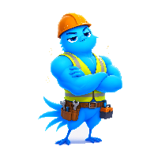
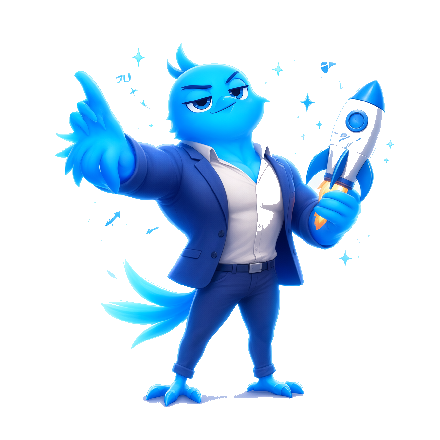

Your company's Assistant. Built for you.
Avellion is a general-purpose AI assistant that lives inside your building. It connects to your tools, learns your business, and works on the tasks that eat your team's day — with your data never leaving your network.
One Assistant, working where you work.
Knows your business
Indexes your documents, CRM and email so it can answer questions from your own data — with sources, not guesses.

Drafts in your voice
Proposals, decks, emails, reports and summaries — drafted from your templates and past work, ready for your review.

Runs your workflows
Repetitive, multi-step work — pulling data, filling forms, preparing reports — becomes a thing it just does.
Works when you don't
Available 24/7/365. It keeps context across sessions and gets sharper the more your team uses it — and it asks before acting on anything external.
You bring the problem. Avellion does the work. You keep the call.
Here's how a task actually divides once your Assistant is in. Most of it stops being your hours — it becomes his.
You frame the task — the goal, the context, what "done" looks like. A sentence, a pointer, a set of constraints. Once.
It pulls the data, reads the documents, drafts the proposal, runs the workflow, fills the forms, assembles the report. The bulk of the hours live here — on your hardware.
You read it, adjust what matters, and approve. It never sends anything external without your go-ahead. Final quality and final call stay with you.
Scan → Proposal → Deploy.
No off-the-shelf software. We start from your company, not from a product page.
Scan
A discovery call plus a short look at your processes and data. We map what's worth automating.
Proposal
Which workflows, on what hardware, what it changes for your team. You approve before we build.
Deploy
We set it up in your building, connect your tools, and train your team. Then it runs 24/7/365 for you.
The best AI for your company runs where your company runs.
A frontier cloud chatbot is powerful — but it works on your data only by first sending it out to someone else's servers, and it bills you by "usage" you can't even read. We build the alternative.
Your data, your machine
Everything runs on a server in your building. Full data sovereignty — your most sensitive information is never uploaded to a third party.
EU-based
Headquartered in Slovenia, built for the EU's data-sovereignty culture — GDPR, works councils, industry 4.0.
Built for you
Configured around your real workflows, tools and processes. Not a generic chatbot pointed at your inbox.

Ready to see Avellion on your company?
Tell us a problem you'd love to hand off. We'll come back with a proposal — or jump on a 30-minute discovery call first.